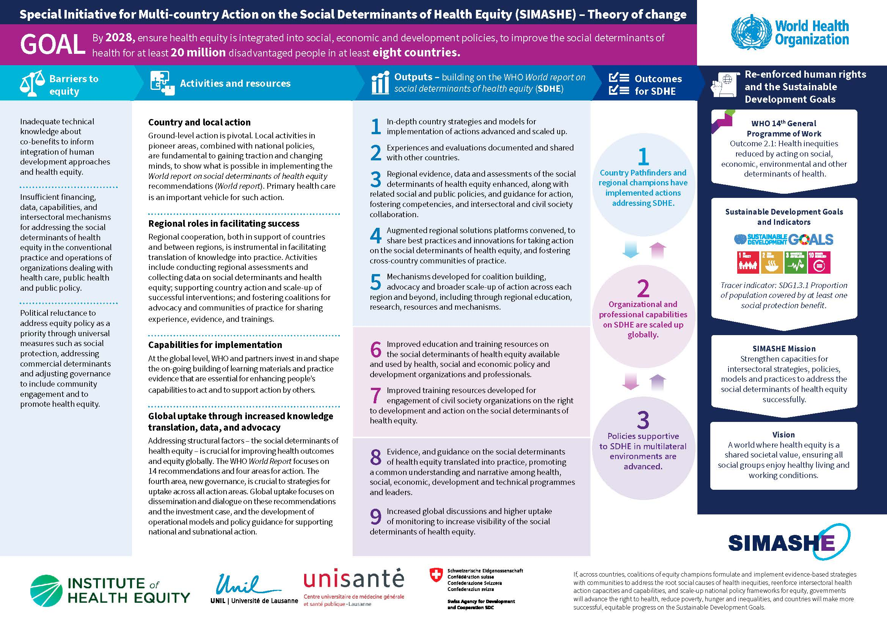

1 El concepto de Salud y su subjetividad
El concepto de Salud ha sido objeto de largos debates a lo largo de los años. Tras la segunda guerra mundial se crea en el año 1948 la Organización Mundial de la Salud (OMS), organismo dedicado a la gestión global de la sanidad. Durante sus primeros años, la OMS definió la salud como: “un estado de completo bienestar físico, mental y social, y no solamente la ausencia de afecciones o enfermedades”. Esta definición tenía como objetivo crear un concepto amplio de la salud que englobase todas las esferas que conformar a una persona. Durante los años posteriores comienzan a desarrollarse conceptos clave como son la prevención de la enfermedad pero sobre la promoción de la salud
Proporcionar a la población medios y garantías para la mejora de su salud.
Bajo los nuevos conceptos de la salud, la definición de original de la salud comenzó a encontrarse limitada debido a que no contemplaba el impacto que la esfera social podía tener sobre el resto de esferas. Mientras se gestaba este cambio en la definición de la salud, en el año 1974 se publicó en Canadá el conocido como Informe Lalonde. Dicho informe indicaba, a grandes rasgos, como la salud de la población se encontraba mas definida por la estructura social, el entorno y los estilo de vida que por la genética y el sistema sanitario. De hecho, Lalonde solo atribuyó un peso del 11% al impacto del sistema sanitario sobre la salud de las personas
1.1 La carta de Ottawa
Con todo ello, en el año 1986 se celebró la primera Conferencia sobre la promoción de la salud en Ottawa, Canadá. La conferencia se celebró durante 4 días y acudieron aproximadamente 200 delegados de 38 países distintos. Tras la finalización de la conferencia se creo la conocida como “Carta de Ottawa”

La `carta de Ottawa tenía como objetivo recoger las distintas filosofías, estrategias e ideas de la conferencia, siendo su lema: “Salud para todos en el año 2000”. Las ideas fundamentales que la carta promulgó fueron:
Se definió la salud como una fuente de riqueza para la vida cotidiana.
La salud solo puede establecerse con cierto requisitos:
Paz, educación y vivienda.
Alimentación, renta y un ecosistema estable.
Justicia social y equidad.
Las estrategias fundamentales de la promoción de la salud:
- Lograr políticas y economías favorables para la salud.
- Asegurar la igualdad y equidad de acceso a las oportunidades. Acceso a la información y aptitud para el control de la salud.
- Actuación coordinada de gobiernos, sector económico y la comunidad.
Establecer las áreas estratégicas:
- Debe valorar las consecuencias para la salud en todos los sectores.
- Deben crearse ambientes favorables para la salud.
- Se debe fomentar la participación de la comunidad.
- Se debe fomentar la educación en la salud personal.
- Se deben reordenar los servicios sanitarios, no estando centrados solo en la visión clínica.
Compromiso con la Equidad buscando reducir las diferencias entre los distintos estratos de la población.
1.2 Equidad VS Igualdad
El concepto de equidad dista del concepto de igualdad. La salud fué definida originalmente entorno a un ambiente igualitario. Sin embargo, se observó como aquella aproximación conllevaba a la creación de situaciones injustas.
La igualdad se refiere a la garantía de poseer la mismas probabilidades de acceso para cada individuo a todos los recursos de los que dispone una población en particular.
Al crear políticas de acceso igualitarias a los recursos de salud, las personas mas favorecidas accedían antes a dichos recursos que las personas mas desfavorecidas (siendo también las que más necesitaban dichos recursos). Todo ello, conllevó a la creación del concepto de la equidad, donde los acceso a los recursos de salud se homogeneizaban eliminando las situaciones ventajosas de las personas más favorecidas.
La equidad se refiere a la garantía de homogeneizar las probabilidades de acceso para cada individuo a todos los recursos de los que dispone una población interviniendo en los factores externos que no pueden ser controlados directamente por cada individuo
El objetivo final se convirtió en:
Este concepto fue determinante cuando se establecieron las conocidas como: Desigualdades en Salud
1.3 Desigualdades en Salud
Tras establecer como la salud era una compleja red entre las distintas esferas que conforman a una persona, comenzó a formarse la idea de como las distintas condiciones que nos conforman y en la que cada uno de nosotros nos encontramos inmersos, condicionan nuestra salud desde sus cimientos.
El problema se centraba ahora en cómo determinar qué diferencias eran intrínsecas y no podían ser modificadas y qué diferencias se encontraban condicionadas por factores modificables.
La desigualdad en salud se refieren a todos aquellos factores injustos, sistemáticos y evitables que condicionan la salud de una persona en particular.
Éste término debía ser correctamente diferenciado de las diferencias en salud siendo ambos muy similares pero radicando su diferencia en la evitabilidad
La diferencia en salud se refieren a todos aquellos factores y/o condicionantes inevitables que condicionan la salud de una persona en particular.
En cuanto a las desigualdades en salud, muchas han sido los estudios que se han desarrollado desde el campo de la Salud Pública para lograr categorizarlos y cuantificarlos. Dentro de las principales desigualdades en salud podemos encontrar:
Desigualdades económicas: Refiriéndose a las desigualdades producidas por la clase social y los ingresos de los individuos. Aunque la capacidad económica de las personas puede variar durante su vida, su clase social afecta de forma determinante en dichas variaciones económicas. Esta desigualdad económica afecta no solo al poder adquisitivo sino también al lugar de residencia, a la seguridad de la persona e incluso al tipo de trabajo al que la persona puede optar.
Desigualdad de género: Refiriéndose a las desigualdades producidas por la clasificación en géneros de los individuos y el papel que estos géneros has desarrollado a lo largo de la historia en las distintas sociedades. La desigualdad de género juega un papel clave en las oportunidades laborales y sociales que una persona tendrá a lo largo de su vida.
Desigualdad de raza: Refiriéndose a las desigualdades producidas por la clasificación social que se da a las distintas etnias de la sociedad. La desigualdad de raza se encuentra íntimamente ligado al racismo.
Desigualdad por condición social: Refiriéndose a las desigualdades producidas por el trato definitorio que se ofrece de forma histórica a ciertas clases sociales.
Desigualdad por decisiones políticas: Refiriéndose a las desigualdades producidas por la diferencia de trato en las decisiones tomadas por los distintos gobiernos; donde, deliberadamente, no se contemplan las necesidades de ciertos grupos de la sociedad.
Se han mencionado algunos ejemplos de desigualdades. Si se desea ampliar la información puede consultarse el siguiente enlace: Health Inequalities Portal
La determinación de las desigualdades en salud conllevaron, necesariamente, a la creación de un marco teórico que englobase tanto las mencionadas diferencias como las políticas de igualdad y equidad. Por ello, se conformó el marco teórico de los Determinantes sociales
1.5 Estrategias en la reducción de las desigualdades
Tras la instauración del marco teórico de los determinantes sociales de la salud, se han propuesto y creado intervenciones y políticas sanitarias destinadas a la reducción de las desigualdades existentes en los determinantes identificados en el marco teórico.
Las estrategias para la reducción de las desigualdades en salud se encuentran activas tanto a nivel micro (sobre las propias personas) como a nivel meso (sobre la comunidad) y a nivel macro (sobre las naciones). Debido a esto, es imperioso antes de comentar las principales estrategias existentes, comentar de forma breve metodologías para su clasificación e impacto:
1.5.1 Clasificación y valoración del impacto
Una aproximación a la clasificación de las estrategias destinadas a la reducción de las desigualdades en salud es la propuesta por la organización Cochrane en su taxonomía EPOC (Effective Practice and Organization of Care) realizada en el año 2015. Esta taxonomía se encuentra conformada por 4 categorías:
| Categoría | Breve explicación |
|---|---|
| Acuerdos prestación | Cambios en la prestación de la atención sanitaria. |
| Acuerdos económicos | Cámbios en los que se adquieren los fondos económicos para la prestación de servicios. |
| Acuerdo en políticas gubernamentales | Cámbios en las leyes y/o politicas gubernamentales sobre ciertos grupos específicos |
| Estrategias de implementación | Intervenciones diseñadas para el cambio en la conducta a largo plazo de los agentes en salud. Dentro de estas estrategias encontramos distintas aproximaciones como es el “Implementation mapping” o “Behaviour Change Wheel” |
En cuanto a la valoración del impacto de las distintas estrategias; una aproximación es el uso de estudios de coste-efectividad o de coste-utilidad.
Análisis económico que evalua si el coste de una intervención sanitaria (medicamento, tratamiento, programa) se justifica por los resultados o beneficios en salud que genera, buscando maximizar la salud por cada unidad monetaria invertida, y se mide comparando costes y efectos (como años de vida ganados o mejoría de síntomas) en unidades comunes, a menudo usando la Razón de Coste-Efectividad Incremental (RCEI)
Análisis económico que mide la eficiencia de una intervención sanitaria comparando su coste total con sus resultados, expresados en Años de Vida Ajustados por Calidad (AVAC o QALY), que combinan la cantidad de vida ganada con la calidad de esa vida (bienestar o utilidad), permitiendo decidir si el “precio” pagado por mejorar la salud es razonable y comparable entre diferentes tratamientos
Encontramos distintas organizaciones que disponen de manuales utilizados para su realización entre ellos, la organización: “3ieimpacto.org” y su manual: “Measuring cost-effectiveness in impact evaluation”
1.5.2 Ejemplos de estrategias en la reducción de desigualdades
Cambios en las estructuras sanitarios y acceso a los distintos acceso sanitarios.
- Creación de programas bucodentales para la infancia.
- Creación de asociaciones y búsqueda una correcta experiencia del paciente.
- Incorporación de nuevos profesionales a los sistemas sanitarios.
Creación de ayudas y partidas presupuestarías para el acceso a servicios públicos por parte de grupos desfavorecidos de la sociedad.
- Ayudas para el transporte.
- Ayudas para comedores.
- Ayudas para el estudio.
- Ayudas para el acceso a la vivienda.
Intervenciones en políticas gubernamentales que ayude al bienestar poblacional.
- Disminución de horas laborales.
- Aumento de zonas de ocio y “zonas verdes”.
- Aumento de oferta cultural.
Mas ejemplos de intervenciones pueden ser consultadas aquí
1.5.3 Estrategias nacionales e internacionales en la lucha contra las desigualdades
Centrándonos en las estrategias realizadas a nivel nacional en el 2008 creó la Comisión Nacional para Reducir las Desigualdades Sociales en Salud. Dicha comisión presentó en el año 2010 un documento en el que se encontraban recogidas 27 recomendaciones principales y 166 recomendaciones específicas para luchar contra las mencionadas desigualdades. Podemos agrupar las recomendaciones en las siguientes áreas:
- Distribución del poder, la riqueza y los recursos.
- Condiciones de vida y de trabajo cotidianas a lo largo del ciclo vital.
- Entornos favorables de la salud.
- Servicios sanitarios.
- Información, vigilancia y docencia.
La información puede ser ampliada en la siguiente dirección del ministerio de sanidad
En cuanto a ejemplos en el ámbito europeo podemos destacas:
- Finlandia: Reducción de la pobreza a través de clarificación y simplificación del sistema de seguridad social.
- Inglaterra: Cuidado y desarrollo de menores de 4 años y progenitores en áreas desfavorecidas.
- Irlanda: Mejora a los servicios básicos de salud por parte de la población más desfavorecida.
En cuanto a las estrategias impulsadas por la OMS a nivel internacional, en el año 2019 se creó el programa especial “Special Initiative for Action on the Social Determinants of Health for Advancing Health Equity” el cual consta de 2 fases con el objetivo de alcanzar los objetivo de la agenda 2030:
- Fase 1 (2021-2024)
- Se elaboró el informe mundial sobre los determinantes sociales de la equidad en la salud.
- Se actualizaron los datos en el repositorio de datos sobre desigualdad en la Salud
- Se realizó un curso de capacitación de la Academia de la OMS
- Se comenzó con las pruebas piloto del proyecto SIMASHE I
- Fase 2 (2025-2028)
- Se comenzará con la fase 2 del proyecto SIMASHE II

Finalmente, en cuanto a las estrategias impulsadas por la OMS a nivel europeo, sus recomendaciones se basan en los 3 niveles citados:
Nivel macro:
- Crecimiento económico con igualdad.
- Reducción de las desigualdades de la renta.
- Fortalecer redes de seguridad para la erradicación de la pobreza.
Nivel meso:
- Eliminar barreras de acceso a la educación.
- Reducir el riesgo en los entorno de trabajo.
- Políticas de reincorporación al mercado laboral.
- Promocionar la salud equitativa (evitando la ley inversa a la asistencia)
Nivel micro:
- Fortalecer el apoyo social.
- Control del tabaco y el alcohol.
- Fomentar la alimentación saludable y la actividad física.
Más información puede ser consultada en el siguiente enlace del Ministerio de Sanidad